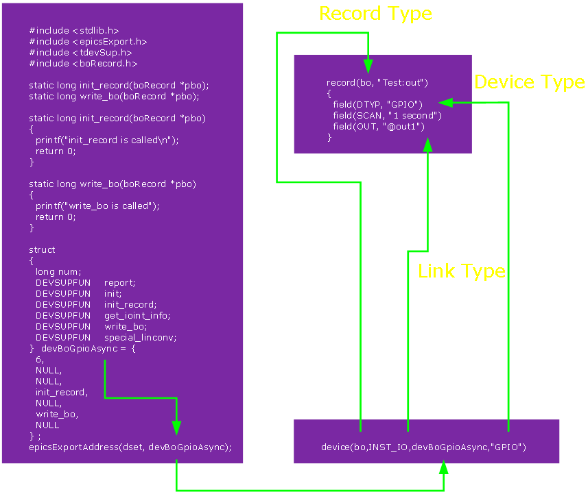

코드 작성에 앞서 어디에다 어떻게 작성하는지 알아야 하므로 몇가지 테스트를 진행 하였다. 일반적으로 C/C++ 코드는 main함수에다 모조리 작성하면 코드는 일단 돌아가지만 EPICS는 그렇게 할경우 죽도 밥도 안되므로 코드가 어떻게 돌아가는지 대충 알아야 한다. 대충 보면 EPICS는 이벤트 구조랑 비슷하다. 이벤트 구조는 특정한 이벤트가 발생할 경우 거기에 연결된 함수가 실행되는 구조이다. 예를 들어 마우스 왼쪽 버튼이 클릭되면 내부적으로 LeftMouseClick Event가 실행되고 거기에 연결된 LeftMouseFun 함수가 실행된다고 보면 된다. 결과적으로 코드를 작성하는 사람은 마우스가 클릭될 때 특정한 동작을 발생시키고 싶으면 LeftMouseFun 함수에다 코드를 작성하면 된다. 물론 이런 이벤트와 함수도 일일이 사람이 등록해야 하지만 대부분의 고급 언어들은 이러한 작업들은 다 해놓고 함수 이름만 제공하므로 프로그래머들은 원한는 함수 이름만 찾아서 사용하면 된다.
그럼 EPICS의 경우는 어디에다 작성하면 될까? 이 부분을 알기 위해 몇가지 테스트를 하였다. 우선 테스트를 위해 EPICS Application 기본 구조를 생성한다. 기존 example로 할 경우 여러 잡다한 파일이 만들어지므로 뼈대만 생성하기 위해 ioc로 생성한다.
scwook@scwook:~$ mkdir rspi scwook@scwook:~$ cd rspi scwook@scwook:~/rspi$ makeBaseApp.pl -t ioc rspi scwook@scwook:~/rapi$ makeBaseApp.pl -i -t ioc rspi
raspApp/src 폴더로 이동하면 rspiMain.cpp와 Makefile 2개가 생성되어 있다. 이제 Device Support가 어떻게 돌아가는지 테스트하기 위해 devGpio.c와 devGpio.dbd 파일을 생성한 후 다음과 같이 작성한다.
devGpio.c
#include <stdlib.h>
#include <epicsExport.h>
#include <devSup.h>
#include <boRecord.h>
static long init_record(boRecord *pbo);
static long write_bo(boRecord *pbo);
static long init_record(boRecord *pbo)
{
printf("init_record is called\n");
return 0;
}
static long write_bo(boRecord *pbo)
{
printf("write_bo is called");
return 0;
}
struct
{
long num;
DEVSUPFUN report;
DEVSUPFUN init;
DEVSUPFUN init_record;
DEVSUPFUN get_ioint_info;
DEVSUPFUN write_bo;
DEVSUPFUN special_linconv;
} devBoGpioAsync = {
6,
NULL,
NULL,
init_record,
NULL,
write_bo,
NULL
};
epicsExportAddress(dset, devBoGpioAsync);
devGpio.dbd
device(bo,INST_IO,devBoGpioAsync,"GPIO")
Makefile 열어서 devGpio.c랑 devGpio.dbd를 추가해 준다.
Makefile rspi_DBD += devGpio.dbd rspi_SRCS += devGpio.c
파일을 저장하고 make를 한다.
make가 완료되면 bin/linux-x86_64 폴더에 rspi 파일이 생성된다. 이제 이벤트를 발생시키기 위해 db 파일을 만들어 보자.
rspiApp/Db 폴더로 이동한 후 test.db 파일을 만든다.
test.db
record(bo, "Test:out")
{
field(DTYP, "GPIO")
field(SCAN, "1 second")
}
Makefile를 열어 test.db를 추가한 후 make를 실행한다.
Makefile DB += test.db
make가 완료되면 최상위 폴더에 db폴더와 test.db파일이 생성된다.
이제 ioc를 실행하기 위해 iocBoot/iocrspi 폴더로 이동한다. st.cmd파일을 수정하기 전 make를 실행시켜 envPaths 파일을 먼저 생성한다. envPaths파일이 생성되었으면 st.cmd 파일을 열어 test.db를 Load하는 코드를 추가 시킨다.
st.cmd
#!../../bin/linux-x86_64/rspi
## You may have to change rspi to something else
## everywhere it appears in this file
< envPaths
cd ${TOP}
## Register all support components
dbLoadDatabase "dbd/rspi.dbd"
rspi_registerRecordDeviceDriver pdbbase
## Load record instances
#dbLoadRecords("db/xxx.db","user=scwookHost")
dbLoadRecords("db/test.db")
cd ${TOP}/iocBoot/${IOC}
iocInit
## Start any sequence programs
#seq sncxxx,"user=scwookHost"
ioc를 실행하기 전에 st.cmd파일을 실행파일로 변경하는게 편리하므로 다음과 같이 속성을 변경한 후 실행 한다.
scwook@scwook:~/rspi/iocBoot/iocrspi$ chmod 755 st.cmd scwook@scwook:~/rspi/iocBoot/iocrspi$ ./st.cmd
출력되는 결과를 보면 'init_record is called' 가 한번 출력되고 'write_bo is called'가 1초 간격으로 출력되는 것을 확인 할 수 있다.
#!../../bin/linux-x86_64/rspi
## You may have to change rspi to something else
## everywhere it appears in this file
< envPaths
epicsEnvSet("ARCH","linux-x86_64")
epicsEnvSet("IOC","iocrspi")
epicsEnvSet("TOP","/home/scwook/epics/example/rspi")
epicsEnvSet("EPICS_BASE","/usr/lib/epics")
cd /home/scwook/epics/example/rspi
## Register all support components
dbLoadDatabase "dbd/rspi.dbd"
rspi_registerRecordDeviceDriver pdbbase
## Load record instances
#dbLoadRecords("db/xxx.db","user=scwookHost")
dbLoadRecords("db/gpioTest.db")
cd /home/scwook/epics/example/rspi/iocBoot/iocrspi
iocInit
Starting iocInit
############################################################################
## EPICS R3.14.12.3-6 $Date: Mon 2012-12-17 14:11:47 -0600$
## EPICS Base built May 22 2013
############################################################################
init_record is called
iocRun: All initialization complete
## Start any sequence programs
#seq sncxxx,"user=scwookHost"
epics> write_bo is called
write_bo is called
write_bo is called
write_bo is called
write_bo is called
결론적으로 'init_record' 함수는 ioc가 처음 실행될 때 한번 호출되고, 'write_bo' 함수는 record가 실행될 때 마다 호출되는 것을 알 수 있다. 즉 GPIO로 출력하는 코드를 'write_bo' 함수에다 작성하면 된다. 입력의 경우도 마찬가지로 호출되며 단지 함수 이름이 혼동되지 않도록 'read_bo' 함수를 만들어 사용하면 된다. 참고로 함수 이름은 사용자가 지정할 수 있다.
이제 GPIO Pin 번호를 Record에서 devGpio.c로 전달하는 방법을 알아보자. raspApp/src/devGpio.c 파일을 'write_bo' 함수를 다음과 같이 수정한다.
devGpio.c
static long write_bo(boRecord *pbo)
{
printf("parm:%s\n", pbo->out.value.instio.string);
return 0;
}
db/test.db 파일을 다음과 같이 수정한다.
test.db
record(bo, "Test:out")
{
field(DTYP, "GPIO")
field(SCAN, "1 second")
field(OUT, "@out1")
}
ioc를 실행하면 "parm:out1"이 출력되는 것을 확인할 수 있다.
iocInit Starting iocInit ############################################################################ ## EPICS R3.14.12.3-6 $Date: Mon 2012-12-17 14:11:47 -0600$ ## EPICS Base built May 22 2013 ############################################################################ init_record is called iocRun: All initialization complete ## Start any sequence programs #seq sncxxx,"user=scwookHost" epics> parm:out1 parm:out1 parm:out1 parm:out1
앞서 devGpio.dbd 파일에 다음과 같이 작성하였다.
devGpio.dbd
device(bo,INST_IO,devBoGpioAsync,"GPIO")
여기서 2번째 INST_IO가 link type인데 이 link type에 따라 읽을 수 있는 변수의 개수가 달라진다. EPICS Application Developer's Guide에 Chapter 6를 보면 다음과 같은 link type에 대하여 설명되어 있다.
실제로 link type에 대한 구조체는 EPICS_BASE/include/link.h 파일에 정의되어 있다. link.h 파일에서 instio 구조체를 보면 문자열 포인터 하나를 가지고 있는 것을 확인 할 수 있다.
link.h
struct instio {
char *string; /* the cat of location. signal.parameter */
};
즉, INST_IO link type의 경우 문자열을 받아 string 변수에 저장하는 것을 의미한다. 여기서 말하는 문자열 이란 OUT 또는 INP field에 정의된 값을 의미한다. 예를 들어 Record가 다음과 같을 때 "value" 문자열이 instio의 string 변수에 저장이 된다.
record(bo, "instio")
{
field(OUT, "value")
}
VME_IO의 경우는 다음과 같이 정의 되어 있다.
link.h
struct vmeio {
short card;
short signal;
char *parm;
};
메뉴얼에 보면 다음과 같이 설명되어 있다.
따라서 Record를 다음과 같이 만들면
record(ao, "vmeio")
{
field(OUT, "#C0 S100 @parameter")
}
vmeio 구조체 변수 card, signal, parm에 각각 0, 100, parameter 값이 저장된다.
지금까지 설명한 내용을 그림으로 표현하면 다음과 같다.
그림에 보면 Device Support에 선언된 구조체(devBoGpioAsync) 포인트를 epicsExportAddress를 통해 저장하고, device는 이 구조체에 대한 포인터를 가져와 Record Type와 Device Tyep, Link Type를 연결한다. 여기서 Record Type과 Device Type는 하나의 Set으로 EPICS 시스템 전체에서 유일한 이름을 사용해야 한다. 만약 다른 시스템에서 개발한 Device Support가 동일한 Record Type과 Device Type Set을 사용하면 충돌이 발생하게 된다. Record측면에서는 선언된 Record Type과 Device Type Set에 연결된 구조체 주소를 이용하여 함수를 호출하게 된다.